iStoreOS+Tailscale实现外网设备访问局域网内设备
前提
1.iStoreOS 能正常联网
2.iStoreOS 使用的是路由模式（推荐），也可以桥接，但要特别注意防火墙
3.路由器（如果只有iStoreOS则不需要关注本条）建议设置为“AP模式”或关闭 DHCP，避免双 NAT
网络拓扑
[光猫]
↓
[iStoreOS软路由]（已接入网络）
↓
[路由器]（可能是AP模式或普通路由）
↓
[家中设备]（PC、NAS、手机、摄像头等）
1.在iStoreOS安装Tailscale
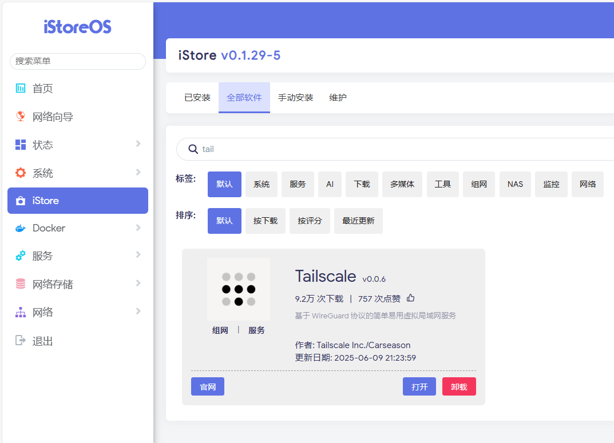2.设置Tailscale
1.在左侧服务选项点击Tailscale
2.在全局设置里填写设备名称和公开网段(公开网段填写局域网ip网段，需根据实际局域网段填写，类似：192.168.0.0/24)
3.服务状态点击启用并点击保存并应用
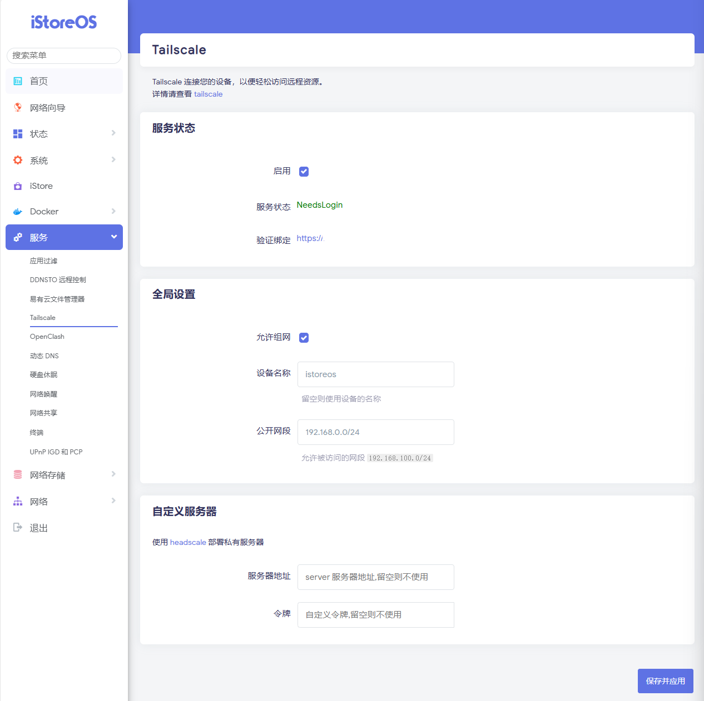4.点击验证绑定的链接，选择一种方式登录
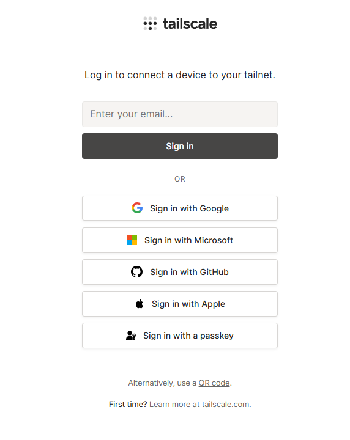5.进入tailscale管理后台
6.点击右侧...(后面操作如图所示)
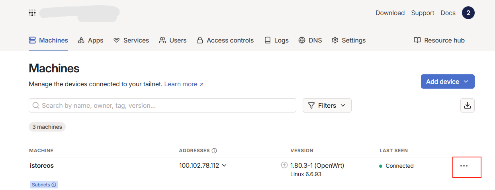 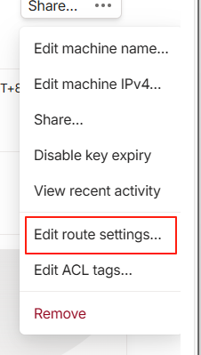 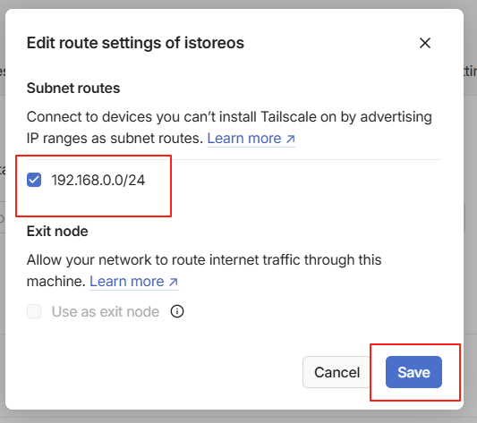 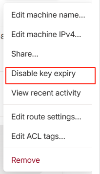7.打开iStoreOS终端(输入用户名和密码)
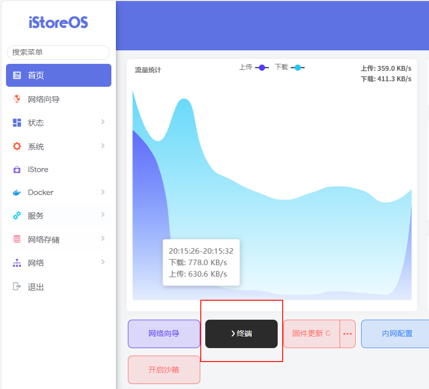8.输入：tailscale up --accept-routes --advertise-routes=192.168.0.0/24 --hostname=istoreos并回车
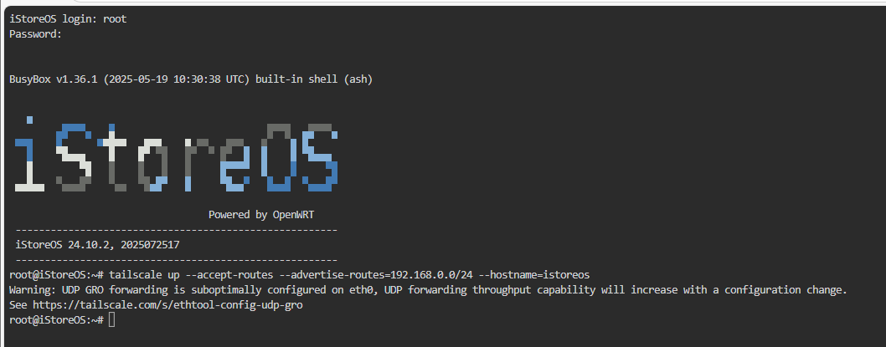9.回到iStoreOS管理界面点击网络->接口->新添加接口
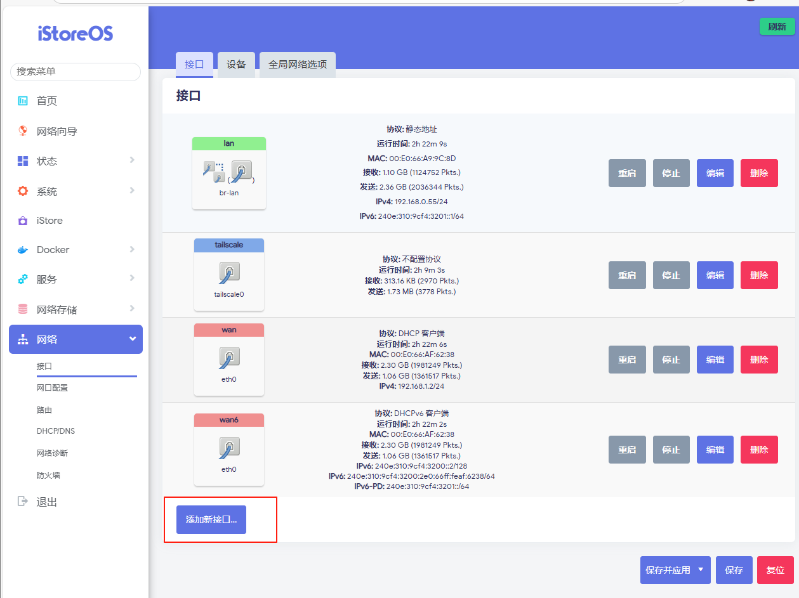10.名称tailscale，协议不配置协议，设备tailscale0->创建接口
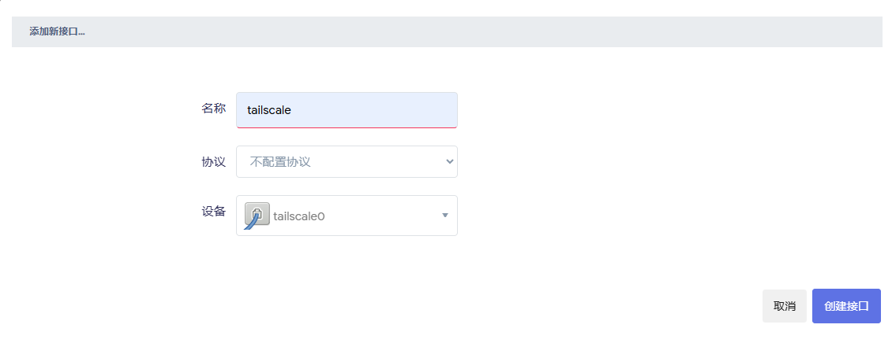11.防火墙设置自定义防火墙tailscale->保存
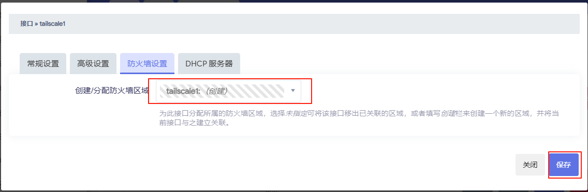12.点击保存并应用
13.点击左侧选项卡防火墙
14.区域里选择tailscale编辑
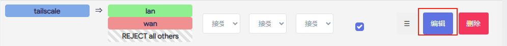15.如图配置并点击保存
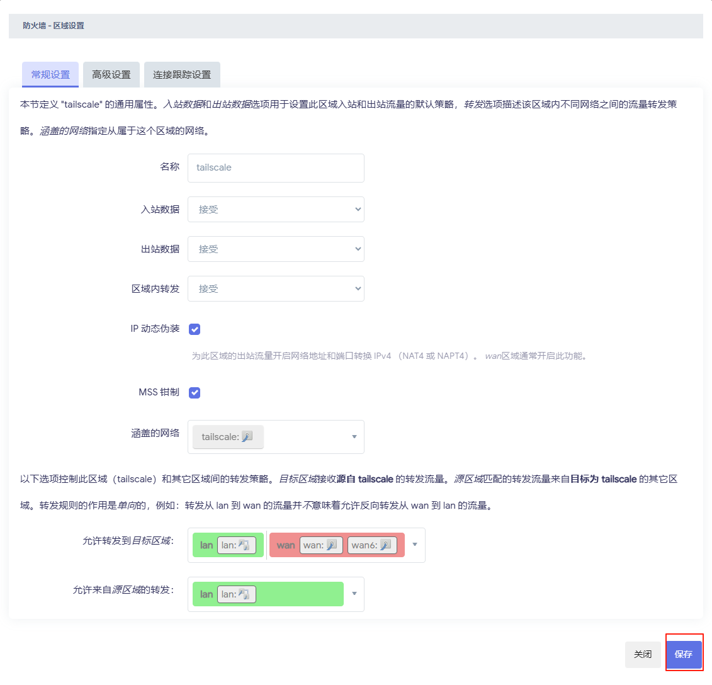16.点击保存并应用
17.进入终端登录账号密码，输入reboot，等待重启结束
3.添加别的设备就可以互访了
直接用局域网ip即可